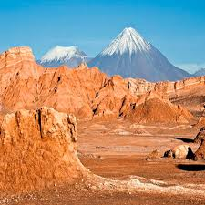
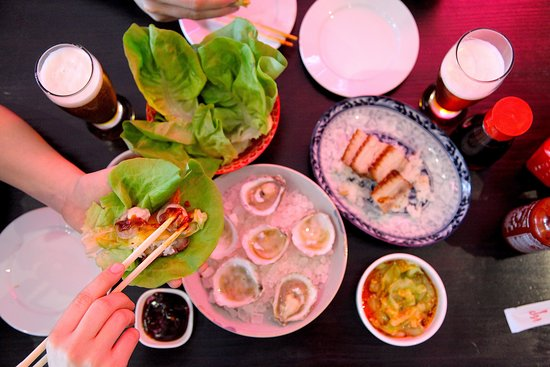

Chile
Chile cuenta con un sinnúmero de lugares turísticos para todos los gustos, pero lo que más le impresiona a los turistas es la asombrosa diversidad de sus regiones. Recorrer el territorio natural chileno es como dar un paseo por los orígenes de la tierra, cuando los animales dominaban el paisaje, las playas eran vírgenes y los desiertos se entremezclaban con cristalinos cuerpos de agua.
Sitios turísticos
Visita las exposiciones y conoce el Castillo Wulff

Edificio emblemático de la ciudad, postal imperdible de atardeceres es mi favorito por su arquitectura franco germana. Este castillo está a los pies del Cerro Castillo, en la Avenida Marina, por lo que bajando te será muy fácil llegar. Fue construido a solicitud de Gustavo Wulff, comerciante alemán del Salitre y carbón, radicado en Chile y fue inaugurado en el año 1908. En los años posteriores sufre algunas modificaciones, como la incorporación de una nueva torre en un roquerío adyacente y parte del piso se sustituye por vidrio, que permite observar el mar. Él muere el año 1946 sin dejar descendientes y tras años es adquirido por la municipalidad de Viña del Mar en 1959. Actualmente el primer piso del castillo se utiliza para presentar exposiciones culturales temporales gratuitas y el segundo piso albergó hasta enero de 2017 las oficinas de la unidad de patrimonio. Es declarado Monumento Nacional en la categoría de Monumento Histórico desde el 2 de septiembre de 1995. Puedes visitarlo de martes a domingo de 10:00 a 13:30 y de 15:00 a 17:30 horas, la entrada es gratuita.
Pasea por el borde costero

El borde costero de la Ciudad Jardín está muy bien cuidado, entre las playas Acapulco, El Sol, Los Marineros y playa del Deporte, encontrarás juegos infantiles, pasarelas de madera donde caminar con sombra, numerosos bancos para sentarte a disfrutar del aire marino y una ciclovía que te lleva hasta Reñaca.
Valle de la Luna – San Pedro de Atacama.
El Norte Grande de Chile, se caracteriza por sus áridos paisajes, siendo hogar del desierto de Atacama, el más seco del planeta, y de una serie de maravillas geológicas situadas en las dos cordilleras que atraviesan el país. Por una parte, la cordillera de los Andes, da lugar al altiplano andino y los grandes salares, mientras que la cordillera de la Costa, con su caída abrupta hacia el mar, da origen a hermosas playas, muchas de ellas consideradas entre las mejores de Chile.
Restaurantes
De Calle
Asiática, Fusión, Comida de calle
La Cabrera
Argentina, Churrasquería, Bar
Cuatro Bocas
Cuatro Bocas es un restaurante que reúne lo mejor de la gastronomía a base de albóndigas, meatballs, bolas o bocas, como le llamamos nosotros. Y son tanto de carne como de verduras, mezcladas, etc. De influencia neoyorquina, con toques especiados thai y centroamericanos, es un lugar ideal para compartir en parejas o en grupos. Porciones (siempre en cuatro albóndigas) son ideales para degustar y compartir junto con una cerveza, nuestra sangría o cocktelería de autor y clásica.
¿Con quien te gustaría ir?
Me encantaría ir con mi novio.Historia de Chile

Un país joven, que guarda las huellas de los primeros seres humanos que habitaron América hace más de 12.500 años, y que se proyecta hacia el futuro con vocación de progreso. La historia de Chile se dividide generalmente en doce periodos que abarcan desde el comienzo del poblamiento humano del territorio del actual Chile hasta nuestros días. El periodo prehispánico corresponde a la historia de las diferentes etnias amerindias presentes en el territorio, extendiéndose desde alrededor del año 14 800 A.C. hasta la llegada de los conquistadores españoles. A partir de 1492, se iniciaron las exploraciones europeas en el continente americano. Fernando de Magallanes y su expedición fueron los primeros europeos en llegar a Chile por el sur a través del estrecho que hoy lleva su nombre en 1520 y Diego de Almagro comandó una expedición hasta el Valle del Aconcagua y el norte del actual Chile en 1536. El tercer periodo corresponde a la conquista española, que se extendió entre 1536 y 1598 con la Guerra de Arauco, durante la cual los españoles estuvieron cerca de ser exterminados por los indígenas mapuches. El período colonial cubre algo más de dos siglos, entre 1598 y 1808, lapso marcado por el establecimiento de las instituciones coloniales. El denominado periodo de la Independencia se desarrolló desde la deposición del gobernador español en 1810 hasta el exilio del Libertador Bernardo O’Higgins en 1823. Estuvo marcado por diversas batallas contra los realistas, que lograron reconquistar brevemente el país, y por problemas en su gobierno. Una vez que la independencia del país fue lograda, siguió un periodo de organización del estado chileno, entre los años 1823 y 1830, que vio sucederse tres gobernantes y dos constituciones. Entre 1831 y 1861, tuvo lugar el periodo de la República conservadora. Estuvo marcado por la puesta en vigor de la Constitución de 1833, establecida por Diego Portales, con un gobierno fuerte y centralizador. A pesar de algunos intentos de subversión, se mantuvo la estabilidad institucional y el país conoció la prosperidad económica. El octavo periodo, conocido como la República liberal, que se extendió desde 1861 hasta 1891, estuvo caracterizado por una mayor estabilidad política y permitió una extensión del territorio hacia el sur y el norte. A partir de la guerra civil de 1891, comenzó la República parlamentaria, que se prolongó hasta la promulgación de la Constitución de 1925. El Congreso nacional dominó la política y el presidente devino una figura prácticamente sin autoridad. El país se urbanizó y se crearon los primeros sindicatos. La República presidencial marcó un cambio en las instituciones, con la Constitución de 1925, hasta el golpe de estado de 1973. Tres partidos dominaron la política: los radicales, los demócrata cristianos y los socialistas. Numerosas empresas públicas fueron creadas en este periodo. Su final estuvo marcado por el triunfo de la izquierda y las ideas socialistas. Luego del golpe de estado del 11 de septiembre de 1973 que derrocó al presidente democráticamente electo Salvador Allende, un régimen militar dictatorial ocupó el poder, con una junta de gobierno dirigida por el general Augusto Pinochet. Decenas de miles de opositores fueron arrestados, torturados o asesinados, incluso en el extranjero, mientras que otros fueron expulsados o condenados al exilio. Con la ayuda de los Chicago Boys, Pinochet llevó adelante una política económica liberal, y una nueva constitución fue adoptada en 1980. Finalmente, la transición hacia la democracia se efectuó a partir de 1990, al asumir la presidencia Patricio Aylwin. En 2006, Michelle Bachelet se convirtió en la primera mujer en ocupar la presidencia del país. En 2010 asumió Sebastián Piñera como el primer presidente de derecha elegido democráticamente desde 1958. Luego de esto, Michelle Bachelet volvió a la presidencia en el año 2014.
Ruta recomendada para viajar en Chile
- Día 1. Santiago de Chile
- Día 2. Valparaíso – Viña del Mar
- Día 3-5. Trekking por el Parque Nacional de las Torres del Paine
- Día 6-8. El Desierto de Atacama